单细胞测序做到什么程度能毕业|硕士篇
原文：https://mp.weixin.qq.com/s?__biz=MzAwMzIzOTk5OQ==&mid=2247511793&idx=2&sn=81f2d2e5ce4e61dd76631c650402bed9&chksm=9b3cd7a1ac4b5eb77b8fa2745ced62861daf1d325167d3fc3a053ededa8d8d6233b3b6d9d389#rd 合集：文献速递
相较于单细胞测序本身而言，毕业 显然是各位更关注的问题，"单细胞测序做到啥程度能毕业"这个问题总是在我的大脑中挥之不去，既然这样，今天就好好的理一理。首先，Biomamba现在虽说是博三，但是考虑到没有硕士毕业过，严格来说咱还是本科生，所以这事儿我说了也不算，回答这个问题的最好方法，就是去知网 翻一番各位硕士的毕业论文 。另外，由于我精力有限，只翻了几篇文章，具有一定的偶然性 ，大家有更多的想法也欢迎在后台或交流群中一起交流。如果想系统性的学习单细胞测序数据分析也可以看这里：单细胞数据基础分析学习手册。
首先，我以“单细胞测序”为关键词在“学位论文”的范围内进行检索，由于毕业论文没有影响因子一说，我们挑了两篇硕士中下载次数最高的毕业论文。
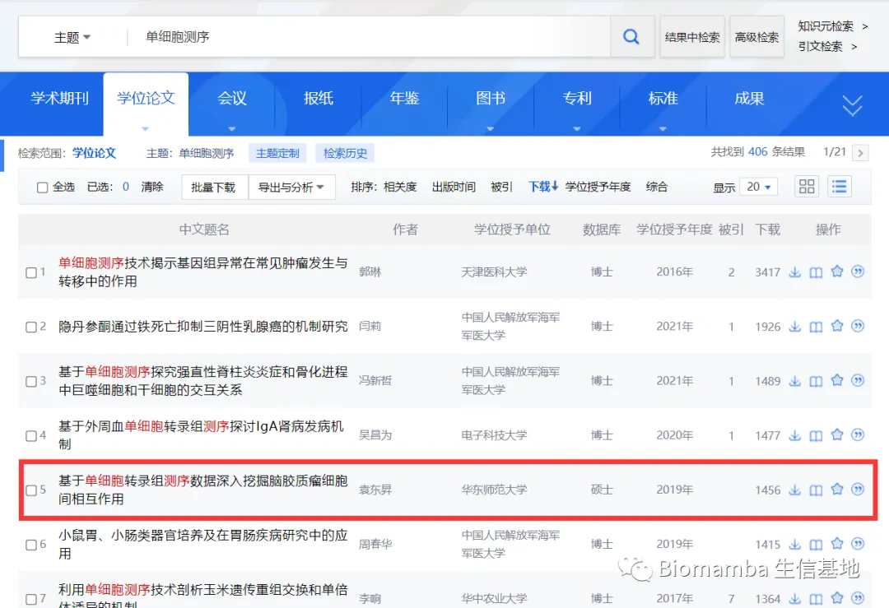
第一篇
这篇是来自华东师范大学的名为“基于单细胞转录组测序数据深入挖掘脑胶质瘤细胞间相互作用”的文章，下载次数1456 次[1]。这本2019年的毕业论文全长67页，掐头去尾58 页内容，就目录而言最主要的工作是做了脑胶质瘤的细胞通讯 预测。
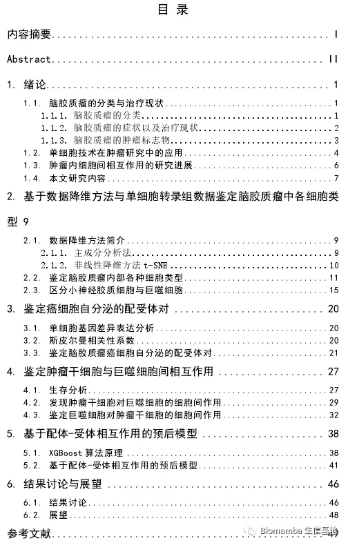
详细的看了一下，文章伊始用了七页的篇幅对脑胶质瘤及其在单细胞领域中的研究现状做了简单的总结，恰到好处的让读者了解了此论文的研究背景。紧接着对PCA、tSNE等降维方法进行了简单的描述，并展示了其中的公式(我个人觉得只要算法不是自己写的，其实没必要大张旗鼓 的去这么细致的描述计算过程)。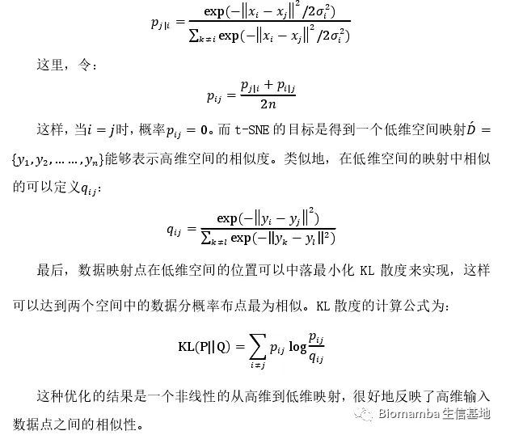
紧接着作者就执行了上述的降维分析并开始寻找各个细胞亚群的marker,并对其中的巨噬细胞展开了详细的探索。
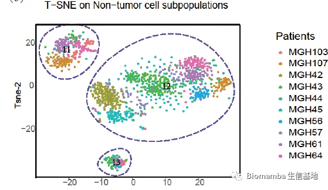
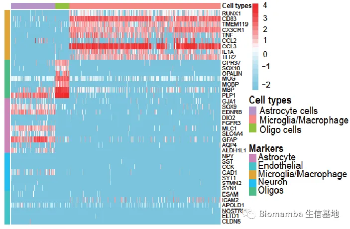
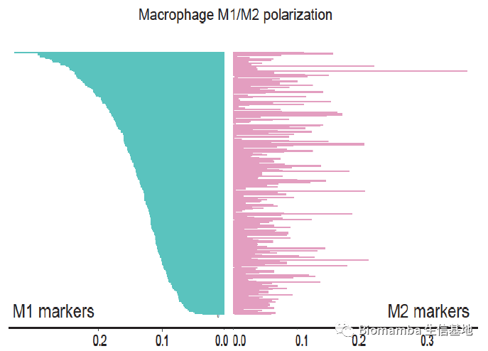
此后作者对其中存在配受体对进行了预测(显然这个细胞通讯做的是比较简单的，大家可以参考这个教程：单细胞测序数据进阶分析—《细胞通讯》2.2CellChat多组别分析)，此后又通过富集分析 进行了一些生物学解释。最后来了几个生存分析 这篇论文页就完工了。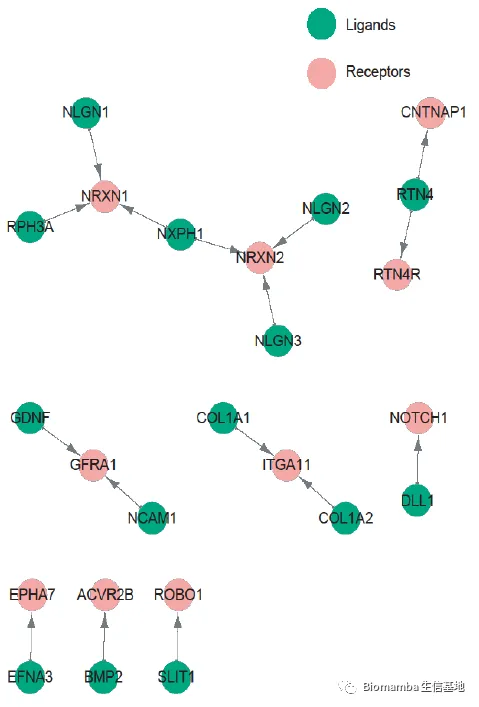
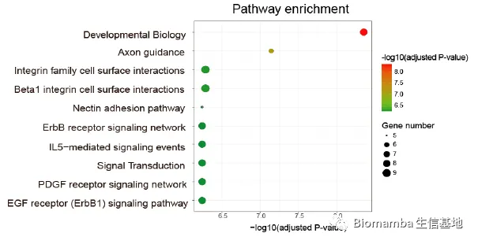
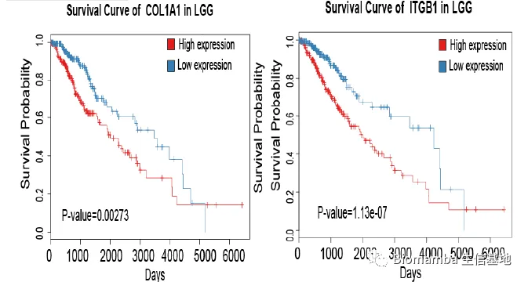
可能大家觉得这篇毕业论文过于简单(看起来我可以在一周之内搞定)，但是考虑到这是一篇2019年的论文，主体工作可能是2018年 完成的，考虑到时间因素，其实这是一篇在当时很优秀 的文章，毕业论文的下载量是一方面，另一方面这篇毕业论文的主体内容也于2019年发表在
第二篇
这是下载量排第二的单细胞相关硕士毕业论文，来自C2高校 ，题为“基于降维与聚类的单细胞RNA测序”[3]，读完之后觉得有些一言难尽 。值得一提的是这位硕士的专业为应用统计，该篇毕业论文的总长度为46页，掐头去尾不足40 页，篇幅确实短了些，不过内容也 。。。。 我们先来看一下目录，1-19页，一半的篇幅都在讲算法背景，并且是已有 的算法，其中还将每个算法的公式、条件罗列了出来，即使考虑到作者本人是数学系的，我个人也认为这种行为完全没有必要，前三章完全是综述类的内容。
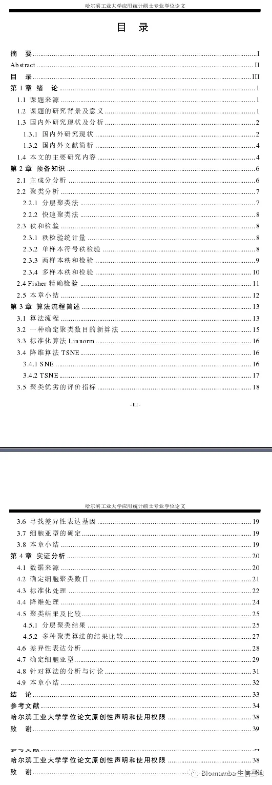
第四章开始作者终于开始操作 了，但也是仅对几种降维聚类方法找了数个数据集进行评估，再完成了细胞注释之后这篇论文也便草草结束。
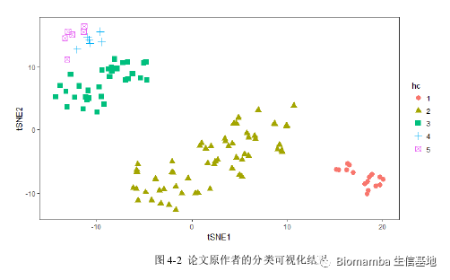
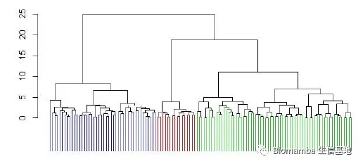
讲道理别人给我提供了参考，我似乎不应该对这位硕士师兄评头论足，但是我这一目十行的看下去，竟发现了些触目惊心的错误 。比如下图这个，其声称“第三代测序，又称为单细胞测序”。事实上第三代测序技术 是指单分子 测序技术。在三代测序中，不需要经过PCR扩增，实现了对每一条DNA分子的单独测序。第三代测序技术也叫从头测序技术，即单分子实时DNA测序[4]。所以第三代测序绝对不能称为单细胞测序 ，这两者之间甚至没有任何的交集 ，目前的单细胞测序几乎都是由二代测序完成，甚至超过95% 都是在Illumina的二代测序平台下完成的。
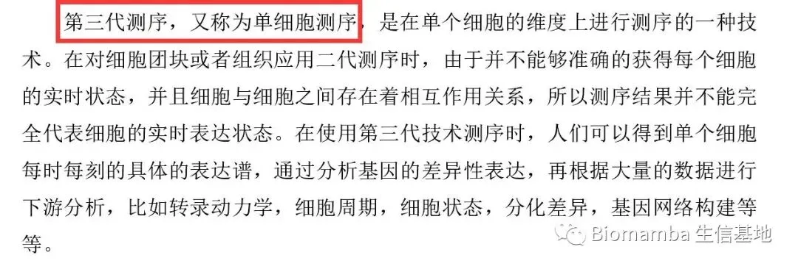
下面这个也纯属胡说八道 ，一代测序是目前准确率最高 的测序方式，唯一的缺点就是通量低 。
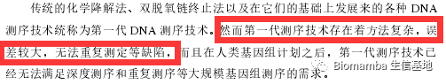
另外，作者对于单细胞矩阵的描述也存在谬误。通常来说人和小鼠能够通过单细胞测序检测到的基因在两万多、检测到的细胞数约在3000~30000/样本(视具体建库平台与方式而定)，但由于单细胞测序表达矩阵的稀疏性，其中包含了大量的零值，不可能所有基因 都参与下游的降维、聚类、分群。因此实际计算过程中更常见的作法是选取其中高变的2000个基因 参与计算，也便不存在 作者说的“基因数远大于细胞数”的情况，事实上随着单细胞测序数据量的爆炸，现在的研究者动辄就收集数十万、上百万的细胞参与计算。作者的这句话应该反过来说更合理 ：现在的单细胞测序矩阵通常细胞数远大于基因数。好了，点到为止 ，这篇咱就说到这。
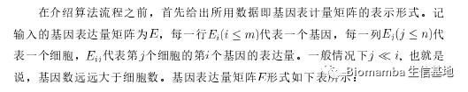
显然，前面的这两篇论文由于时效性，表现只能说差强人意，甚至第二篇emm。。。所以我又挑了两篇今年新出锅的论文。第三篇
这是来自军科院的病理学硕士的毕业论文，题为“基于单细胞转录组测序的放射性肺损伤机制研究”，于今年6月提交。全篇97页，掐头去尾也有92 页，从内容上看比前两篇文章饱满了不只一个量级。文章中从动物到分子实验，从单细胞测序到空间转录组，从结果到讨论，完成度均很高。
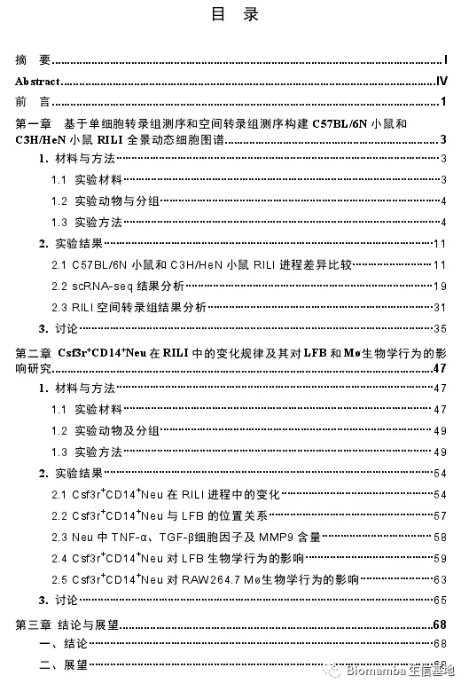
首先作者饲养了大量的模式动物，并通过胸部CT对小鼠进行影响学检测，扑杀后进行了细胞因子、羟脯氨酸、胶原含量等指标的检测，对取下来的肺部组织还进行HE、天狼猩红染色，并对组织进行了scRNA-Seq(10X Genomics)和空间转录组 的建库与测序。
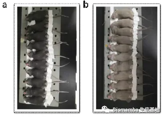
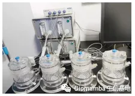
影像学和各类染色的量化与分析方面不是我们的重点，这里不做展示，单细胞方面首先还是经典的分群注释、统计各细胞类型在组内的占比(沉浸式统计细胞比例)，可以看出作者的分辨率调的比较高，注释时应当做了大量的工作。
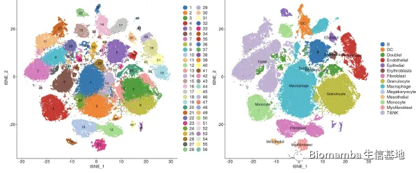
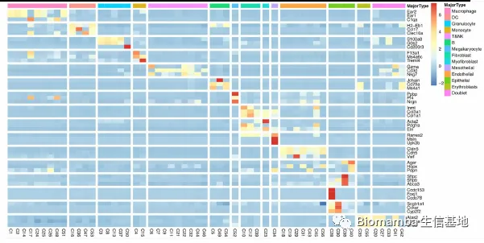
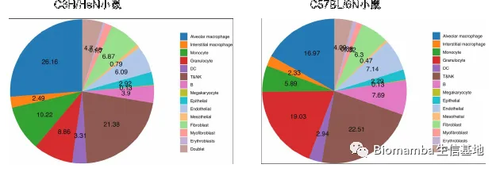
在展示了一些先验基因后作者通过细胞通讯和GSVA分析(单细胞中应该如何做GSVA？)开始进阶分析 ，并且发现了一些与代谢、免疫相关的通路具有组间差异。
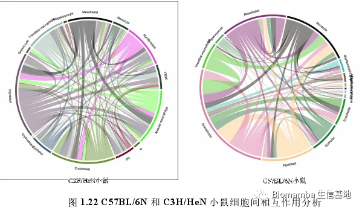
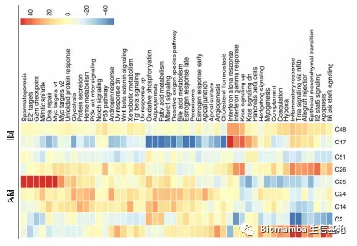
为了探究以上的发现有无空间分布 的特性，作者紧接着在空间转录组的数据中研究了上皮细胞、内皮细胞、粒细胞、T细胞等的分布情况。
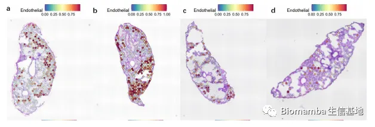
最后，作者也不仅局限于数据分析，还采取了流式细胞术、免疫荧光染色、放射免疫法等方式验证了前期的结果。可以说工作完成的相当完整，再多一两章的内容我觉得当作博士毕业论文也未尝不可。这样的成果不发表SCI显然有点可惜，我顺着标题搜了一下，这部分工作果然在今年发表在了
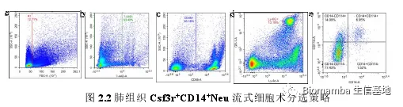
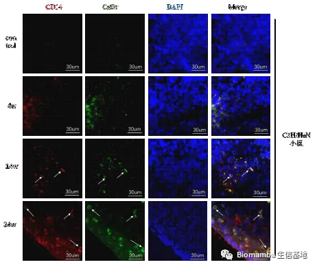
第四篇
这又是一篇单细胞技术在肺部的应用，是来自中科院深圳先进技术研究院的一篇题为“单细胞转录组数据分析技术在特发性肺纤维化机制研究中的应用”[6]，亦是在今年6月提交。这篇论文共67页，掐头去尾共62 页，其中大约花了19 页介绍单细胞技术与疾病的背景，介绍的比较详细，单细胞入门的同学可以参考一番。
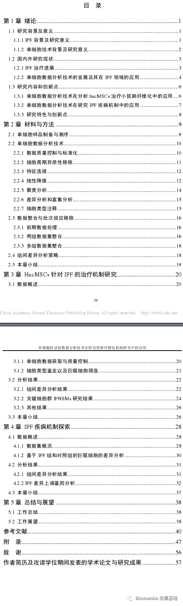
从单细胞测序方面的具体内容来看，作者对其中巨噬细胞的亚群展开了详细的分析，展示了其中marker的表达情况，并通过共孵育检测了一些干扰素 的表达水平。
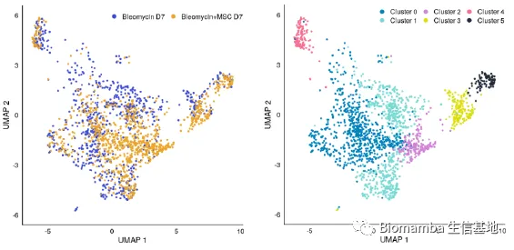
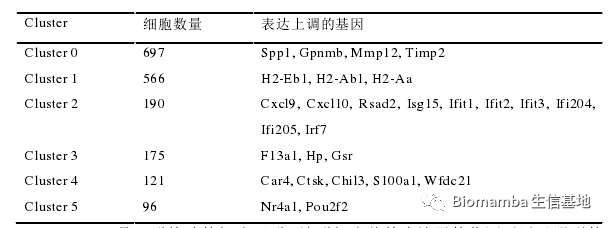
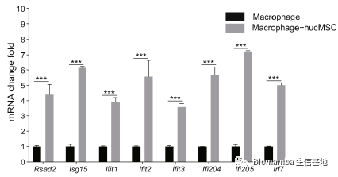
此后作者又在GEO数据库 中找了四个数据集加以验证，做了差异分析接富集分析 ，接着观察了几个关键基因的表达差异 便以讨论结束，与第三篇比验证的部分自然是少一些。不过看起来作者写毕业论文的时候有所保留，这篇毕业论文的主体内容已经在2021年发表在了
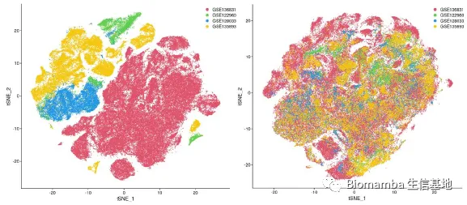
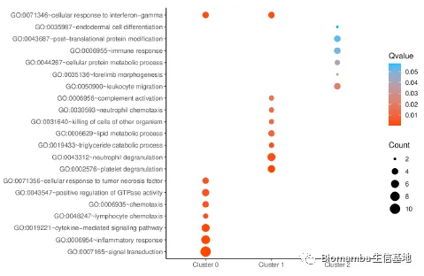
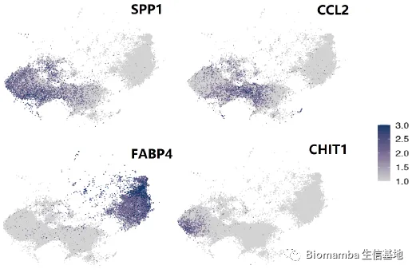
总结
仅从单细胞的角度来说似乎硕士毕业的要求并不高，看起来熟悉了Seurat分析流程会作一些简单的可视化加进阶分析(需要教程可以参考：六万播放量的B站单细胞课程)即可完成论文的主体内容。有余力的同学还可以补一些免疫荧光、HE染色、流式细胞术方面的实验，可以让文章变得更加的完整。总体来说单细胞方面的研究也比较好发文章，上述的几位均有不俗的SCI发表(除了那位搞我心态的。。)，看来各位都有光明的未来~
参考文献
[1]袁东昇. 基于单细胞转录组测序数据深入挖掘脑胶质瘤细胞间相互作用[D].华东师范大学,2019.
[2]Yuan D, Tao Y, Chen G, Shi T. Systematic expression analysis of ligand-receptor pairs reveals important cell-to-cell interactions inside glioma. Cell Commun Signal. 2019 May 22;17(1):48.[3]吴德亮. 基于降维与聚类的单细胞RNA测序数据分析[D].哈尔滨工业大学,2018.
[4]https://baike.baidu.com/item/%E7%AC%AC%E4%B8%89%E4%BB%A3%E6%B5%8B%E5%BA%8F%E6%8A%80%E6%9C%AF/2349961?fr=aladdin
[5]Ma L, Ye Y, Lu H, Xing Y, Zhao Z, Quan C, Jia Z, Lu Y, Li Y, Zhou G. A Study on the Radiosensitivity of Radiation-Induced Lung Injury at the Acute Phase Based on Single-Cell Transcriptomics. Front Immunol. 2022 Jul 27;13:941976.
[6]高俊晓. 单细胞转录组数据分析技术在特发性肺纤维化机制研究中的应用[D].中国科学院大学(中国科学院深圳先进技术研究院),2022.[7]Tang Z, Gao J, Wu J, Zeng G, Liao Y, Song Z, Liang X, Hu J, Hu Y, Liu M, Li N. Human umbilical cord mesenchymal stromal cells attenuate pulmonary fibrosis via regulatory T cell through interaction with macrophage. Stem Cell Res Ther. 2021 Jul 13;12(1):397.

如何联系我们

 公众号后台消息回复不便，这里给大家留一下领取资料及免费服务器(足够支持你完成硕博生涯的生信环境)的微信号 ，方便各位随时交流、提建议（别问在么，添加时直接备注来意）。此外呼声一直很高的交流群 也建好了，欢迎大家入群讨论：
公众号后台消息回复不便，这里给大家留一下领取资料及免费服务器(足够支持你完成硕博生涯的生信环境)的微信号 ，方便各位随时交流、提建议（别问在么，添加时直接备注来意）。此外呼声一直很高的交流群 也建好了，欢迎大家入群讨论：
大家可以阅读完这几篇之后添加给生信入门初学者的小贴士 如何搜索公众号过往发布内容

 您点的每个赞和在看，我都认真当成了喜欢
您点的每个赞和在看，我都认真当成了喜欢